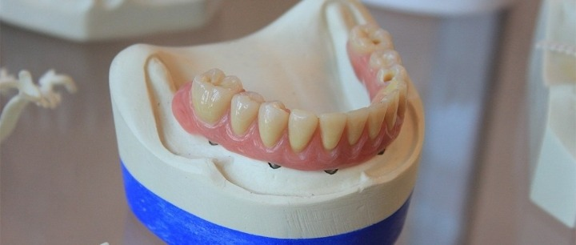
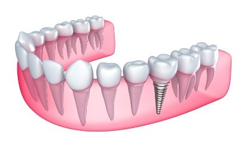
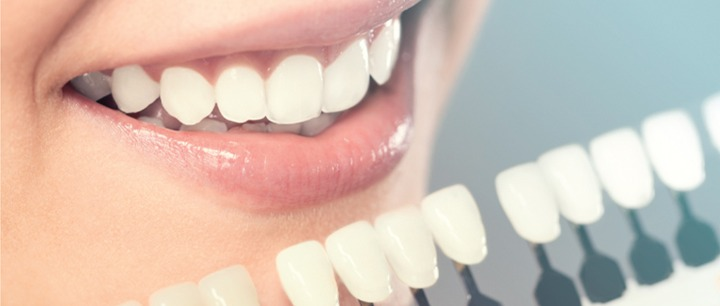

علاج الأسنان في تركيا
خدمات علاج الأسنان في تركيا للأطفال والبالغين وذوي الاحتياجات الخاصّة، مثل: القشور الخزفية، زراعة الأسنان، حشو الأسنان، تقويم الأسنان، بجودة ومعايير عالمية
علاج الأسنان في تركيا
تتمثّل رسالتنا في علاجك الطبية بتقديم الرعاية والخدمات المثالية، لندعم صحّة أسنانكم وجمال ابتساماتكم، في بيئة وأجواء مريحة، وبأسعار تنافسية مناسبة، ولنعمل على تقليل احتياجاتكم لأيّ علاج للأسنان لأطول فترة ممكنة مستقبلاً، باستخدام أجود الخامات وأفضل الخدمات وأحدث التقنيات، وبأيادٍ احترافية الخبرة والتخصُّص.
كما يسعدنا، وبكلّ فخرفي علاجك الطبية، أن نقدم شهادة ضمان لجودة المعالجات السنية التي نقدِّمها وتشمل: زراعة الأسنان، والتقويم، والقشور الخزفية... لنمنحك مزيداً من الثقة بجودة خدماتنا.

الخدمات التي تقدمها علاجك الطبية لعلاج الأسنان في تركيا
فحص دوري للأسنان
ينصح أطباء الأسنان الأشخاص الذين يتمتعون بصحة جيدة، بزيارة طبيب الأسنان مرة واحدة على الأقل كل 6 أشهر، ولكن أولئك الذين يعانون من مشاكل أكثر، سيحتاجون إلى فحوصات ومتابعة أكثر لعلاج الأسنان في تركيا , وننصح في علاجك الطبية بالزيارة الدورية لعيادات الأسنان وذلك للاطمئنان على صحة الأسنان والفم وتفادي اي مشاكل مستقبلية، وفي عيادات علاجك الطبية نقدم العديد من الخدمات الطبية السنية المميزة كتنظيف الأسنان وتبييضها بطرق حديثة متقدمة.
جدير بالذكر أننا في علاجك الطبية نقدم الإستشارة المجانية، بالإضافة إلى عروض وأسعار تناسب الجميع.
حشو الأسنان و سحب العصب
حشو الأسنان ومعالجة العصب، تقنيات في طب الأسنان تستعمل لعلاج التسوس وترميم الأسنان المتكسرة، يستخدمها طبيب الأسنان لإعادة الأسنان لشكلها ووظيفتها الطبيعية ، يعتبر حشو الأسنان هو العلاج الأمثل، إذا كان تسوس الأسنان في مرحلة أولية، ولم يصل إلى لب السن.
هناك العديد من أنواع الحشوات، والتي يختار طبيب الأسنان الأفضل بينها، حسب حالتك وتفضيلك.
أما بالنسبة لسحب العصب أو علاج قناة الجذر أو العلاج اللبي، هو إجراء يستخدمه أطباء الأسنان لعلاج لب الأسنان المصاب أو الميت. ويتضمن إزالة المواد الميتة، ثم ملء قنوات الجذر داخل الأسنان.
إذا كنت ترغب في تجنب سحب العصب أو علاج قناة الجذر ، فبادر بعلاج تسوس الأسنان في أقرب فرصة، أي قبل أن يصل إلى قناة الجذر. وذلك لأنه إذا أصاب التسوس السن من الداخل، أو وصل إلى الأنسجة العصبية، فإن الحشو لا يكفي للعلاج.
في بعض الحالات يكون خيار العلاج هو إما علاج قناة الجذر أو الخلع، وعادة ما يوصي طبيب الأسنان بعلاج قناة الجذر.
هذا لأنه الخيار الأفضل عموماً للحفاظ على الأسنان الطبيعية، حيث يُعد علاج قناة الجذر طريقة عملية لإنقاذ السن من الخلع، ولكن في بعض الحالات، مثل كسر الأسنان، قد يكون الخلع هو السبيل الوحيد لعلاج الأسنان.
زراعة الأسنان
أحدثت زراعة الأسنان ثورة في مجال التعويضات السنية، وطب الأسنان التجميلي، منذ طرحها لأول مرة.
قبل هذه التقنية، اعتمد الناس كلياً على أطقم الأسنان والجسور، لاستبدال الأسنان المفقودة في الفم.
في حين أن هذه العلاجات قد أعادت الوظيفة والجمال معاً، فقد فتحت زراعة الأسنان في تركيا عالماً جديداً من الخيارات.
واكبنا في علاجك الطبية كما واكبت تركيا التطور الحاصل في شتى مجالات الطب، وفي مقدمتها زراعة الأسنان، ومن أهم مايميز العلاج في تركيا بشكل عام، وفي علاجك الطبية بشكل خاص، الأسعار المناسبة، والجودة العالية بأيدي أكثر الأطباء كفاءة.
خدمات عيادات علاجك الطبية تتضمن طيفاً واسعاً من الخيارات والمعالجات السنية طويلة الأمد، وتعدُّ زراعة الأسنان الخيار الأكثر ديمومة، وتشمل:
- الزراعة الفوريّة للأسنان.
- زراعة الأسنان عبر مرحلتين.
- علاج الجيوب الأنفيّة في حالات زراعة الأسنان.
- تطعيم وتقوية عظام الفك في حالات زراعة الأسنان.


الزراعة الأسنان الفورية
توضع الغرسة الفورية، والتي تُعرَّف بالزراعة الفورية للأسنان مباشرة في موقع؛ قُلع منه السن حديثاً، حيث يتم وضع الغرسة الفورية في نفس وقت خلع السن الطبيعي.
تتطلب الزراعة الفورية للأسنان تحميل الوظيفة الإطباقية للغرسة خلال 48 ساعة من إدخالها. على عكس الزراعة التقليدية، التي تقلل الزراعة الفورية بشكل كبير من فترة الانتظار، بين إدخال الغرسة وتحميلها، فضلاً عن تقليل عدد الزيارات لطبيب الأسنان.
مراحل زراعة الأسنان
يتم إجراء زراعة الأسنان على مرحلتين، وهو الإجراء الذي تتم فيه عمليتان جراحيتان، تسمحان بمعدل نجاح أعلى لزراعة الأسنان.
المرحلة الأولى من جراحة زراعة الأسنان، هي عندما نضع الغرسة في عظم الفك، وتترك لمدة شهرين إلى ثلاثة أشهر، للالتحام أو الالتئام العظمي.
بعد فترة، وبمجرد أن تلتحم غرسة الأسنان مع العظم، يمكننا أن نبدأ بالمرحلة الثانية من الجراحة، التي تتضمن كشف عن غرسة الأسنان، وربط الدعامة.
الشعور بعدم الراحة، والألم بعد المرحلة الثانية من جراحة زراعة الأسنان ضئيل للغاية، مقارنة بالمرحلة الأولى من جراحة زراعة الأسنان.

علاج الجيوب الأنفية في حالات زراعة الأسنان.
يمكن أن يؤدي توسع الجيوب الأنفية الفكية ورقة العظم السنخي المتبقي إلى بروز غرسات الأسنان في الجيوب الأنفية الفكية أثناء وضعها.
يمكن أن تؤدي قوى الأطباق، والعض على السن المزروع، والهياكل المحيطة أيضاً، إلى إزاحة الغرسة.
تشمل العوامل المؤثرة الأخرى نقص خبرة الجراح، واستخدام أطقم الأسنان المؤقتة دون راحة، والحفر الزائد، والتطبيق غير المناسب للقوة، أثناء إزالة الغرسات غير الناجحة.
يوصى عادةً بإزالة الغرسات البارزة فوراً. ولكن اذا تأخرت إزالة الغرسة يجب السيطرة على التهاب الجيوب الأنفية، بالمضادات الحيوية ومزيلات احتقان الأنف، قبل إزالة الغرسة .
بعد إزالة الغرسة البارزة، يمكن إعادة إجراء عملية الزراعة، مع ترقيع العظام مرحلة تلو الأخرى.
تطعيم وتقوية عظام الفك في حالات زراعة الأسنان.
ترقيع وتطعيم العظام هو إجراء جراحي لإصلاح أو إعادة بناء العظام، من خلال زرع أنسجة العظام السليمة، يمكننا إعادة تشكيل وتعويض العظام والأنسجة الداعمة المفقودة.
ترقيع وتطعيم العظام هي تقنية مطلوبة، عندما لا يكون لدى المريض كمية كافية من العظام السليمة في فمه، والتي بمقدورها دعم زراعة الأسنان.
يمكن أن يكون سبب هذا النقص في العظام الطبيعية:
- عيوب خلقية.
- مرض في اللثة.
- إصابة الوجه أو الصدمة.
- مساحة فارغة بعد إزالة الأسنان.
تقويم الأسنان
تقويم الأسنان هو أحد تخصصات طب الأسنان، الذي يتعامل مع تشخيص ووقاية وتصحيح سوء تموضع الأسنان والفكين، ونمط الأطباق والعض الخاطئ
لدينا في عيادات علاجك الطبية ، خيارات متعددة ومناسبة للكبار والصغار، ممن يحتاج تقويم الأسنان، ومنها:
- تقويم الأسنان الثابت، الأمامي والخلفي.
- تقويم الأسنان المتحرك للأطفال.
- تقويم الأسنان الخفي أو الشَّفّاف Invisalign.
جراحة الوجه والفكين
جراحة الفم والوجه والفكين هي تخصص جراحي، يركز على الجراحة الترميمية للوجه، وجراحة رضوض الوجه، وتجويف الفم والرأس والرقبة والفكين، بالإضافة إلى جراحة تجميل الوجه، و تشمل معالجة أورام الوجه، والتهابات، وتكيُّسات، وأورام الغُدد اللعابية.
جراحة اللثة
جراحة اللثة هي إجراء جراحي، مصمم لاستعادة وتجديد الشكل والوظيفة الطبيعية، لهياكل اللثة المفقودة والتالفة، التي تدعم الأسنان (أنسجة اللثة، وأربطة اللثة والعظام).
كما يمكنكم زيارة هذا المقال لمعلومات أكثر استفاضة.
عدسات الأسنان "الفينير"
القشور الخزفية عبارة عن قشور رقيقة، توضع فوق الجزء الأمامي (المرئي) من السن. تبدو مثل الأسنان الطبيعية.
يمكن استخدام قشور الأسنان لتصحيح مجموعة كبيرة من مشاكل الأسنان، مثل:
- بقع الأسنان التي لا يمكن تبييضها.
- الأسنان المتكسرة أو البالية.
تركيب القشور الخزفية " عدسات الأسنان " بأنواعها: اللومينير، والفينير، وتركيبات الزركونيوم والبورسلان وغيرها من أحدث تقنيات العلاجات الترميمية لبنية الأسنان، يساعد و يحافظ على الأسنان ويمنحها إطلالة مشرقة، وابتسامة عذبة.
تبيض الأسنان بلليزر في تركيا
تواصل معنا في علاجك الطبية، للاستفسار عن علاج كافة مشاكل الأسنان وجراحتها، مع رعاية مثالية بأسعار أقل بـ 70% من مراكز أوروبا وأمريكا.
ستحصل على استشارة طبية مجانية، من فريقنا ذي الخبرة العالية، ويمكننا أن نرتّب لك رحلتك العلاجية المميزة في تركيا، من لحظة استقبالك في المطار حتى وداعك بعد اكتمال رحلتك العلاجية بأمان، بالإضافة إلى توفير مترجم طبي يرافقك في مراحل علاجك، وإقامة فندقية طيبة، وأيام للسياحة في ربوع إسطنبول الرائعة.

هل لديك إستفسار : تواصل معنا - الإستشارة مجانية
علاجك الطبية .. لتكن الصحة تاجك.

زراعة الأسنان في تركيا
تتمّ زراعة الأسنان في تركيا من خلال عملية جراحية بسيطة داخل عظام الفك، حيث تشكّل جذراً قويّاً للسنّ المزروع لاسترجاع المظهر الجمالي، ووظائف الاسنان الطبيعية
اقرأ المزيد
حشو الأسنان في تركيا
حشو الأسنان ومعالجة العصب، تقنيات في طب الأسنان تستعمل لعلاج التسوس وترميم الأسنان المتكسرة، يستخدمها طبيب الأسنان لإعادة الأسنان لشكلها ووظيفتها الطبيعية
اقرأ المزيد
تقويم الأسنان في تركيا
تقوم فكرة تقويم الأسنان على مبدأ تطبيق ضغط على الأسنان لفترة زمنية طويلة، ما يؤدي إلى تحريكها تدريجياً لمواضعها المثالية، ممّا يحسِّن مظهر واصطفاف الأسنان
اقرأ المزيد
تركيب القشور الخزفية في تركيا
علاج الأسنان في تركيا يستند إلى أحدث التقنيات في طب وجراحة الأسنان، مثل القشور الخزفية بأنواعها، وذلك في حال حدوث ضرر لطبقة المينا، وهي الطبقة الخارجية للسن
اقرأ المزيد